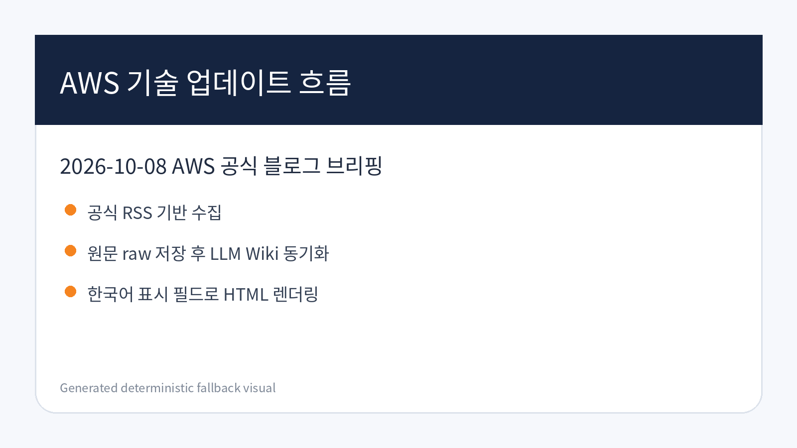
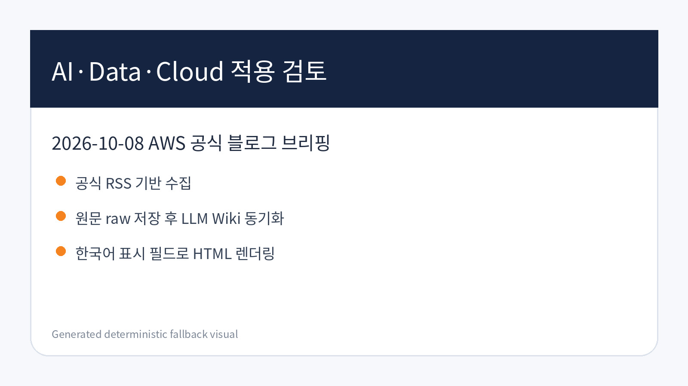
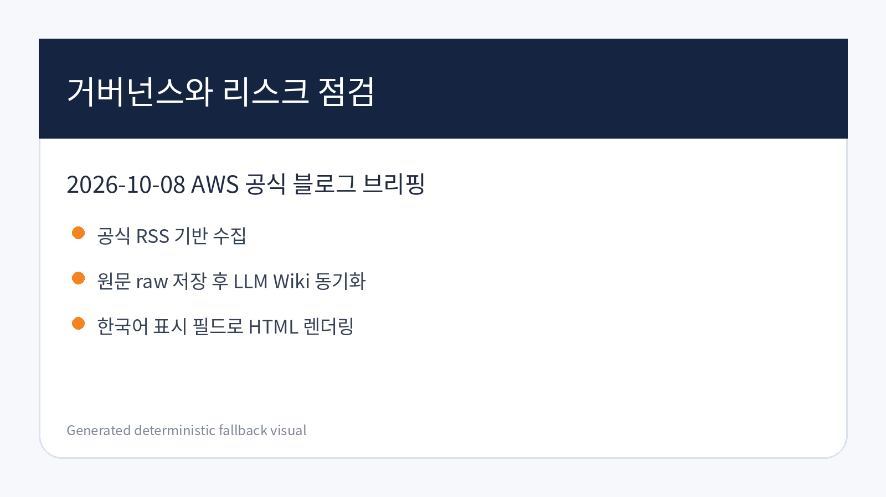

AI/ML
Cornerstone OnDemand의 Amazon Bedrock 기반 데이터베이스 진단 시간 78% 단축 사례
AWS Machine Learning Blog에 게시된 'Cornerstone OnDemand의 Amazon Bedrock 기반 데이터베이스 진단 시간 78% 단축 사례' 항목입니다. 원문에서 확인되는 변경점과 적용 맥락을 중심으로 기업 검토 포인트를 정리했습니다.
원문 보기 · 2026-10-08
2026-10-08 오전 7시 실행 결과입니다. 오늘 신규 수집 항목을 기준으로 작성했습니다. 화면에는 한국어 표시 필드만 사용하고, 공식 제품명과 URL은 원문 표기를 유지했습니다.
공식 RSS 3개에서 후보 50건을 확인했고 신규 저장 7건을 처리했습니다. 본 브리핑은 원문 raw 저장, LLM Wiki 동기화, GBrain 파일 단위 저장 이후 작성했습니다.
AWS Machine Learning Blog에 게시된 'Cornerstone OnDemand의 Amazon Bedrock 기반 데이터베이스 진단 시간 78% 단축 사례' 항목입니다. 원문에서 확인되는 변경점과 적용 맥락을 중심으로 기업 검토 포인트를 정리했습니다.
원문 보기 · 2026-10-08
AWS Machine Learning Blog에 게시된 'AI 실무 역량 격차를 줄이는 AWS 교육 플레이북' 항목입니다. 원문에서 확인되는 변경점과 적용 맥락을 중심으로 기업 검토 포인트를 정리했습니다.
원문 보기 · 2026-10-08
AWS Machine Learning Blog에 게시된 'AWS DevOps Agent 조사 결과를 승인형 자동 조치로 연결하는 패턴' 항목입니다. 원문에서 확인되는 변경점과 적용 맥락을 중심으로 기업 검토 포인트를 정리했습니다.
원문 보기 · 2026-10-08
AWS Machine Learning Blog에 게시된 'Qlik의 Amazon Bedrock 기반 근거 중심 엔터프라이즈 AI 구축 사례' 항목입니다. 원문에서 확인되는 변경점과 적용 맥락을 중심으로 기업 검토 포인트를 정리했습니다.
원문 보기 · 2026-10-08
AWS Machine Learning Blog에 게시된 '에이전트형 자동화의 비즈니스 가치 산정 프레임워크' 항목입니다. 원문에서 확인되는 변경점과 적용 맥락을 중심으로 기업 검토 포인트를 정리했습니다.
원문 보기 · 2026-10-08
AWS Machine Learning Blog에 게시된 'Amazon Quick와 Amazon Bedrock 기반 RAG 접근 제어 재설계' 항목입니다. 원문에서 확인되는 변경점과 적용 맥락을 중심으로 기업 검토 포인트를 정리했습니다.
원문 보기 · 2026-10-08
AWS Machine Learning Blog에 게시된 'AWS에서 제공되는 Claude Haiku 5.5 신규 모델 검토 포인트' 항목입니다. 원문에서 확인되는 변경점과 적용 맥락을 중심으로 기업 검토 포인트를 정리했습니다.
원문 보기 · 2026-10-08



이번 실행에서는 Amazon Bedrock 기반 사례, RAG 접근 제어, 에이전트형 자동화, Claude Haiku 5.5 제공과 같은 AI·데이터 적용 주제가 집중적으로 확인됐습니다. 이는 기능 발표와 고객 사례가 함께 축적되는 흐름으로 해석할 수 있지만, 실제 적용 가능성은 각 원문의 전제 조건을 확인해야 합니다.
AWS 서비스 업데이트는 기능 출시 자체보다 적용 전제, 통합 지점, 권한·감사·비용 관리 조건을 함께 검토해야 의미가 있습니다. 원문 출처를 기준으로 실제 워크로드와 규제 환경에 맞는지 확인하는 접근이 필요합니다.
| 기사 | 게시 | 카테고리 |
|---|---|---|
| Cornerstone OnDemand의 Amazon Bedrock 기반 데이터베이스 진단 시간 78% 단축 사례 | 2026-10-08 | AI/ML |
| AI 실무 역량 격차를 줄이는 AWS 교육 플레이북 | 2026-10-08 | AI/ML |
| AWS DevOps Agent 조사 결과를 승인형 자동 조치로 연결하는 패턴 | 2026-10-08 | AI/ML |
| Qlik의 Amazon Bedrock 기반 근거 중심 엔터프라이즈 AI 구축 사례 | 2026-10-08 | AI/ML |
| 에이전트형 자동화의 비즈니스 가치 산정 프레임워크 | 2026-10-08 | AI/ML |
| Amazon Quick와 Amazon Bedrock 기반 RAG 접근 제어 재설계 | 2026-10-08 | AI/ML |
| AWS에서 제공되는 Claude Haiku 5.5 신규 모델 검토 포인트 | 2026-10-08 | AI/ML |
한국 기업은 리전, 데이터 보관, IAM, 감사 로그, 비용 예측 가능성을 함께 검토해야 합니다. 원문에서 확인되지 않은 내부 적용 전략이나 특정 조직 오퍼링은 이 문서에서 추정하지 않았습니다.